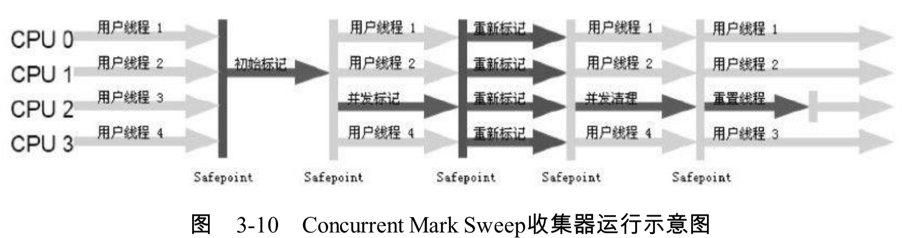

老年代CMS收集器

- 以获取最短回收停顿时间为目标的收集器。非常适合互联网站或者B/S系统的服务端上，这类应用尤其重视服务的相应速度，希望系统停顿时间最短，以给用户带来较好的体验。
- Concurrent Mark Sweep，采用标记清除算法。
- 整个过程中耗时最长的并发标记和并发清除过程收集器线程都可以和用户线程一起工作，所有，总体上来说，CMS收集器的内存回收是与用户线程一起并发执行的
整体过程
- 初始标记（CMS initial mark）
- 需要Stop The Wold
- 仅仅标记GC Root能直接关联到的对象
- 速度快
- 并发标记（CMS concurrent mark）
- 进行GC Root Tracing
- 和用户线程一起工作
- 重新标记（CMS remark）
- 需要Stop The Wold
- 修正并发标记阶段因用户程序继续运行而导致标记产生变动的那一部分对象的标记记录
- 比初始标记时间稍微长，但远比并发标记时间短
- 并发清除（CMS concurrent sweep）
- 和用户线程一起工作
缺点
对CPU资源非常敏感
- 并发设计的程序都对CPU资源比较敏感
- 在并发阶段，它虽然不会导致用户线程停顿，但会占用一部分线程（或者说CPU资源）而导致应用程序变慢，总吞吐量会降低
- 默认回收线程数是
(CPU数+3)/4，4个以上时垃圾收集线程不少于25%的CPU资源。但当CPU之后2个时，对CPU的负载就比较大，要分出50%来执行收集线程。
无法处理浮动垃圾（Floating Garbage）
浮动垃圾：在CMS并发清理阶段用户线程还在运行，可能会产生新的垃圾，这一部分垃圾在标记过程之后，本次无法回收，需要留到下一次，这一部分垃圾就是浮动垃圾
因为清理过程用户线程还在运行，所有不能像其它收集器一样等到老年代快要满了再清理，要预留足够的内存空间。可以通过-XX:CMSInitiationOccpancyFraction来设置触发百分比。在JDK.16zhong该值默认为92%。如果在CMS清理过程中，用户线程无法申请足够的内存，就会出现Concurrent Mode Failure失败。这时虚拟机会临时启用SerialOld收集器进行老年代的垃圾回收。
存在内存碎片
因为采用的是标记清理算法，就必然会产生内存碎片。
-XX:+UseCMSCompactAtFullCollection默认开启，用户在CMS收集器顶不住要进行FullGC时开启内存碎片的合并整理过程，该过程无法并发，空间碎片没有了，但停顿时间变长-XX:CMSFullGCsBeforeCompaction，这个参数是用于设置执行多少次不压缩的FullGC后，执行一次带压缩的（默认是0，每次都进行碎片整理）